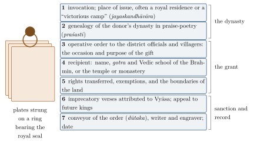

Chapter 17: Kingdoms on Record: Charters, Scribes and Statecraft, c. 500–1700¶
The Arthaśāstra and the Dharmaśāstras describe what kings and courts ought to do. For the thousand years between the Guptas and the Mughals, another kind of evidence survives in quantity: the records that kingdoms themselves produced. Tens of thousands of copper-plate charters and stone inscriptions record grants of land, endowments, settlements of disputes and the orders of kings and officials; formularies preserve the models of deeds and letters that scribes copied; and a few historians and royal authors wrote about government from experience. This chapter reads that evidence for what it shows of law and polity in the regional kingdoms of early medieval and medieval India. It describes the copper-plate charter as a legal instrument; the procedure for buying land recorded in the Gupta-period plates of Bengal; the scribes and record-keepers on whom government depended; the Gujarati formulary called the Lekhapaddhati; the medieval Sanskrit treatises on kingship; Kalhaṇa’s history of Kashmir; the Vijayanagara empire with its royal manual of statecraft; the lineage polity of the Rajput kingdoms; the Ahom kingdom of Assam, organised on principles of its own; and the settlements of disputes between communities that kings recorded in stone.
Several related subjects are treated elsewhere and are not repeated here: the debate among historians about the nature of the early medieval state — feudal, segmentary or integrative — in Chapter 5; the fiscal terms of the land grants in Chapter 6; and the village and temple assemblies of the Tamil country in Chapter 16. The records also have their own biases. They were made for those who received land and privileges — Brahmins, temples, monasteries, officials and merchants — and they speak of cultivators, labourers and artisans mainly as the bearers of dues that passed with the land. They are nevertheless the closest view we have of government at work before the Persian archives of the Mughal period (Salomon 1998; Sircar 1965).
17.1 The Charter as a Legal Instrument¶
17.1.1 What the Law Books Required¶
Yājñavalkya tells the king who has given land or made a permanent endowment (nibandha) to have a written record made, so that future good kings may know of it. The record is to be on cloth or on a copper plate, marked above with the king’s seal; it should name the king’s ancestors and the king himself, state the extent of the gift and describe its boundaries, and bear the king’s own signature and the date, so that the charter (śāsana) is firm (Yājñ 1.318–320). Later smṛtis classify the royal charter among the kinds of document recognised in court (Chapter 12), and Manu lists those who make forged royal charters (kūṭaśāsanakartṛ) among the offenders whom the king should put to death (Manu 9.232). These rules describe, in outline, the charters that survive in large numbers from the fourth century onward.
17.1.2 The Form of a Copper-Plate Grant¶
A typical copper-plate charter consists of one or more plates strung on a ring that carries the royal seal. Its text follows a pattern that varied by dynasty and period but kept its main parts for more than a thousand years (Figure 17.1). The genealogy in praise-poetry (praśasti) could run, in later charters, to dozens of verses and served the dynasty’s claims to legitimacy; the operative order usually names an auspicious occasion, such as an eclipse, a solstice or a festival, and the religious merit of the king and his parents as the purpose of the gift; the rights and exemptions follow the fiscal formulae described in Chapter 6; and the imprecatory verses (Chapter 5) are followed by an appeal to future kings to maintain the gift.

The charter was therefore at once a title deed, a public notice and a political statement. As a title deed it defined the land and the rights, and it was kept by the recipient’s family, sometimes for many centuries; as a notice it informed officials and villagers of their new obligations; as a political statement it recorded the dynasty’s descent, victories and piety. The rights it conveyed were described as perpetual, to last “as long as the moon, the sun and the earth”, and were often granted according to “the rule of the fallow land” (bhūmicchidranyāya), a phrase whose exact sense is debated but which seems to have assimilated the grantee’s title to the right of the person who first brings waste land under cultivation (Sircar 1965; Salomon 1998).
17.1.3 Resumption, Confirmation and Forgery¶
The imprecatory verses were needed because gifts were in fact resumed. Later kings confirmed some earlier grants, sometimes by issuing new plates, and ignored or cancelled others; some charters record that a gift was renewed after the original plates had been lost or destroyed. The value of a charter as evidence made forgery profitable, and epigraphists have identified many spurious plates, some attributed to early kings by much later engravers, others enlarging the boundaries or rights of a genuine grant. The forgers usually betray themselves by anachronistic script, language or titles, and by genealogies that do not fit the dynasty they claim. The smṛtis’ insistence on the seal and the king’s signature, and Manu’s capital penalty, show that the problem was recognised early. In the Tamil country, inscriptions on temple walls served as a public archive of endowments and decisions, and when a temple was rebuilt its earlier inscriptions were sometimes recopied on the new structure so that the record of its rights would not be lost (Nilakanta Sastri 1955).
17.2 Buying Land in Gupta Bengal¶
A rare view of local administration at work is given by a group of copper plates from northern Bengal, above all the five plates found at Damodarpur (now in Bangladesh), dated in Gupta years that range from the mid-fifth to the mid-sixth century CE. They record not royal gifts but purchases of land by private persons who wished to endow Brahmins or a temple, and the procedure they describe is consistent from plate to plate.
The would-be purchaser applied to the district office (adhikaraṇa) at Koṭivarṣa, the headquarters of a district (viṣaya) in the province (bhukti) of Puṇḍravardhana. The office was headed by the district officer (viṣayapati), appointed by the provincial governor, who sat with a board of four: the chief banker or head of the town’s guilds (nagaraśreṣṭhin), the chief caravan merchant (prathama-sārthavāha), the chief artisan (prathama-kulika) and the chief scribe (prathama-kāyastha). The application named the land wanted and its purpose and offered to pay the price at the rate customary in the district. The record-keepers (pustapāla) then examined their registers and confirmed that the land was fallow and unsettled and yielded no revenue, so that its sale would cause the king no loss and would bring him a share of the religious merit of the gift. The office accepted the price, the land was measured out in the presence of village elders and householders, and the transaction was recorded on copper. The price is stated in gold coins (dīnāra) per unit of land (kulyavāpa); in different plates of the region it is two, three or four dīnāras, perhaps according to locality and the quality of the land. The purchased land was usually held as a perpetual endowment (nīvīdharma), of which the capital could not be alienated and only the yield was enjoyed.
These records show several things that the śāstras do not. The district office was not simply a royal bureaucracy: the representatives of the town’s bankers, merchants and artisans sat beside the king’s officer, so that the leading commercial groups of the district shared in its government (Volume 19 of this series discusses these groups as economic actors). Land was registered, and the registers were consulted before a transfer; the claim that waste land belonged to the king, whose consent was needed for its sale, was put into practice. And the language of merit framed the whole transaction, so that the sale of state land to private donors could be presented as a pious act in which the king shared (Sircar 1965; Singh 2008).
17.3 Scribes and Record-Keepers¶
Government by charter and register required a class of professional writers. The Arthaśāstra already describes a records office (akṣapaṭala) in which the accounts of departments and the customs of regions, villages, castes and families were registered (AŚ 2.7; Chapter 6). In the Gupta period the word kāyastha appears as the title of a scribe or clerk, as on the Koṭivarṣa board. Over the following centuries it came to name hereditary communities of scribes and administrators in northern and eastern India, whose place in the varṇa order the Dharmaśāstra writers found hard to fix. Other regions had their equivalents, such as the village accountant (karaṇam in Telugu, kaṇakkaṉ in Tamil), who kept the records of fields and dues and in the Telugu country was often a Brahmin, and the hereditary record-keepers of districts in the Deccan (Chapter 18). Their skills passed easily from one regime to another. Under the sultans and the Mughals, Hindu scribes learned Persian and staffed the revenue and accounting departments; under the British they became clerks of the courts and the collectorates.
The power of these men over the records made them objects of suspicion. Yājñavalkya tells the king to protect his subjects when they are oppressed by cheats, thieves, evil-doers, violent criminals and others, “and especially by kāyasthas” (Yājñ 1.336). Kalhaṇa’s history of Kashmir (Section 17.6) is full of invective against the kāyastha officials who, in his view, squeezed the cultivators on behalf of greedy kings, and a century earlier the Kashmiri satirist Kṣemendra had mocked the scribe as a figure of rapacity and fraud in his Narmamālā. The hostility was partly the resentment of Brahmin authors towards a rival literate group; it also reflects a real feature of agrarian government, in which the clerk who measured the field and wrote the assessment held the cultivator’s livelihood in his pen. Kashmir also produced a formulary for such men, the Lokaprakāśa, attributed to Kṣemendra, which contains models of documents and administrative vocabulary; its present text was enlarged in the Sultanate period and contains Persian terms, showing how such handbooks were kept up to date as the language of government changed.
17.4 The Lekhapaddhati: A Scribe’s Formulary from Gujarat¶
The fullest picture of the documents that medieval government and commerce produced comes from Gujarat. The Lekhapaddhati (“method of documents”), known in a related form as the Lekhapañcāśikā, is a collection of model documents compiled for the use of scribes and preserved in manuscripts of about the fifteenth century. Many of its models carry dates, and most belong to the period of the Caulukya (Solaṅkī) and Vāghelā kings, roughly the tenth to the thirteenth century, though some are later. Its language is a Sanskrit heavily mixed with Old Gujarati administrative and commercial terms. First edited in 1925 and translated into English by Pushpa Prasad, it is one of the very few substantial bodies of non-epigraphic documents surviving from early medieval India (Prasad 2007).
The models fall into two broad groups. The documents of state include royal land grants, orders appointing governors and officials, letters from the king to his officers, and treaties between kings, which set out the terms of alliance or submission and the obligations of each side — the six measures of the Arthaśāstra (Chapter 7) in the form of working instruments. They also name the departments (karaṇa) through which the kingdom was administered, among them offices for trade, for the ports, for customs and for the mint. The private documents include deeds of sale of houses and land, mortgages and pledges, loan agreements with their interest and sureties, deeds of partition, acknowledgements of deposit and letters of many kinds. Their clauses correspond closely to the smṛtis’ requirements for a valid document — the names of the parties and their fathers, the date, the object, the terms and the attesting witnesses (Chapter 12) — and show that the śāstric law of contract and evidence was part of the working knowledge of the scribes who drew up ordinary transactions (Chapter 13).
Among the private documents are deeds for the sale of women as household slaves. They record the purchase, list the domestic and agricultural labour the woman must perform, and secure the buyer’s control over her. Pushpa Prasad has drawn attention to these deeds as evidence of the harsh condition of female slaves in thirteenth-century Gujarat. They are a necessary counterweight to accounts of medieval law drawn only from the śāstras, whose provisions on slavery (Chapter 13) say little about how slaves were actually bought and held.
17.5 Medieval Treatises on Kingship¶
The nīti tradition continued in the regional courts (Chapter 3), but its most characteristic medieval products were encyclopaedic. Three kinds of work may be distinguished.
The first is the royal encyclopaedia composed in the name of a king. The Mānasollāsa (“Delight of the Mind”, 1131), attributed to the Cālukya king Someśvara III of Kalyāṇa, is arranged in five books of twenty chapters each, on the qualities by which a king gains a kingdom, the means of securing it, and the enjoyments, amusements and sports that it makes possible. Its first two books restate the doctrines of the seven constituents, the six measures and the four means, with practical chapters on forts, the treasury and the army; its later books, on the palace, food, dress, music, painting, horses, elephants and games, present kingship as a courtly culture as much as an art of government. Daud Ali has shown how such texts, read with inscriptions and court poetry, describe a court society whose members were bound to the king by a cultivated ethic of service, refinement and loyalty (Ali 2004).
The second is the rājadharma section of the great Dharmaśāstra digests. Lakṣmīdhara, minister of the Gāhaḍavāla king Govindacandra of Kanauj (r. c. 1114–1155), devoted one of the fourteen books of his Kṛtyakalpataru to rājadharma, gathering verses from the Mahābhārata, the smṛtis and the Purāṇas on the king’s qualities, the consecration, ministers, forts, the treasury, foreign policy and the rites that protect the kingdom. Caṇḍeśvara in fourteenth-century Mithilā (Rājanītiratnākara), Mitra Miśra in seventeenth-century Orchha (the Rājanītiprakāśa, part of his Vīramitrodaya) and Nīlakaṇṭha Bhaṭṭa for Bhagavantadeva, a Sengar chief of Bhareh near the Chambal (the Nītimayūkha, part of his Bhagavantabhāskara) continued the genre. Their method was that of the digest: to arrange and harmonise authoritative verses, with brief comment, under topical headings. They give little direct information about the kingdoms of their own time, and some were written for rulers who were themselves vassals of the sultans or the Mughals. Yet their concern to define the duties of a king, and the rites of royal consecration and protection, shows that the śāstric model of kingship remained a resource for rulers who wished to present themselves as kings according to dharma.
The third kind is the work written by or for a ruler on the basis of experience. Kṛṣṇadevarāya’s Āmuktamālyada, discussed below, is the outstanding example; the Marathi Ājñāpatra of the early eighteenth century belongs to the same practical genre (Chapter 18). Works of this kind are rare, and for that reason valuable: they show how the categories of the nīti tradition were applied by men who actually governed.
17.6 A Historian’s Kingdom: Kalhaṇa’s Kashmir¶
Kalhaṇa’s Rājataraṅgiṇī (“River of Kings”, 1148–49) is the nearest thing in Sanskrit to a political history written from the inside, and Chapter 5 has introduced it as a critic of kings. Its value for the history of polity lies in what it shows of the working of one kingdom over several centuries. Kalhaṇa, the son of a minister, says in his introductory verses that he consulted the works of earlier chroniclers and the inscriptions recording royal foundations and grants, and his eighth and last book, covering his own lifetime, is a detailed and often eyewitness account of court politics.
Several features of the Kashmiri state stand out. Royal power rested on the agricultural surplus of a narrow valley, and the chronicle repeatedly links good government with the protection of cultivators and bad government with their oppression by revenue officers. The landholders called Ḍāmaras, who controlled the countryside with armed followings, appear as a power that kings could neither do without nor fully subdue, and much of Kalhaṇa’s account of the eleventh and twelfth centuries is a story of royal campaigns against them. In the capital, the palace guard known as the Tantrins made and unmade kings in the early tenth century, and Kalhaṇa describes them as virtually selling the throne. Queen Diddā, who ruled first as regent and then in her own name until 1003, appears as a capable and ruthless ruler who held the kingdom together through ministers she raised and destroyed. And the officials of the treasury and revenue — the kāyasthas whom Kalhaṇa detested — appear as the indispensable agents of every regime, devising new exactions for fiscally hard-pressed kings.
Kalhaṇa judges this history by the standards of rājadharma and of karma: kings fall through their own vices and the misdeeds of their ministers, and the good king protects his subjects and honours Brahmins and temples. But his account also gives weight to forces that a purely moral account would ignore — the Ḍāmaras, the guards, the bureaucracy, famine and flood. The chronicle was continued under the sultans by Jonarāja and Śrīvara (Chapter 18) and was translated into Persian at Akbar’s court, so that the Sanskrit tradition of royal history passed into the historiography of the Mughals (Stein 1900).
17.7 Vijayanagara: Empire, Nāyakas and a King’s Advice¶
17.7.1 The State¶
The Vijayanagara state, founded around 1336 by the brothers Harihara and Bukka of the Saṅgama family in the aftermath of the Delhi Sultanate’s southern campaigns, became one of the largest kingdoms in the history of the peninsula and survived, in reduced form, after its defeat in 1565 until the mid-seventeenth century. Its kings used the full range of Sanskrit royal titles and also called themselves “sultan among Hindu kings” (hindurāya-suratrāṇa), a title that shows how the political vocabulary of the sultanates had entered southern kingship. Its records — several thousand inscriptions in Kannada, Telugu, Tamil and Sanskrit — and the accounts of Portuguese and Persian visitors describe a state in which the king’s power rested on military chiefs (nāyakas) who held territories (amaram) in return for maintaining troops and paying a share of the revenue, while temples, Brahmin settlements and local assemblies continued to manage much of the agrarian economy. Volume 20 of this series describes the military side of this system and Volume 19 the economy.
Historians disagree about how centralised the state was. Burton Stein, extending his segmentary model of the Cōḷa state (Chapter 5), described a kingdom in which the king’s ritual sovereignty, displayed in great festivals such as the Mahānavamī at the capital, held together chiefs whose real power was local; others have stressed the empire’s fiscal reach, its control of the trade in warhorses and its military organisation (Stein 1989). Cynthia Talbot’s study of the preceding Kākatīya kingdom in Andhra shows that the nāyaka relationship already existed there in the thirteenth century, as a personal bond of service between a king and warriors of varied social origins, recorded in inscriptions that celebrate the warriors’ loyalty and their gifts to temples (Talbot 2001). In the Nāyaka kingdoms that succeeded Vijayanagara in the Tamil country — Madurai, Tanjavur and Gingee — a new style of kingship emerged, which V. Narayana Rao, David Shulman and Sanjay Subrahmanyam have described as expressed through lavish giving, court spectacle and a self-confident Telugu court culture, owing more to the values of warriors and merchants than to the Brahmanical model of the śāstras (Narayana Rao et al. 1992).
17.7.2 Kṛṣṇadevarāya’s Āmuktamālyada¶
The most celebrated ruler of Vijayanagara, Kṛṣṇadevarāya (r. 1509–1529), composed in Telugu a long devotional poem, the Āmuktamālyada (“She who gave the garland she had worn”), on the story of the Tamil saint Āṇṭāḷ. Into its fourth canto, within the story of the Vaiṣṇava teacher Yāmuna, who had been a king before he renounced the world, he set some eighty verses on rājanīti. The passage draws on the Sanskrit nīti tradition but speaks with the voice of a practising ruler (Reddy 2010). Among its best-known counsels, it advises the king to increase the prosperity of the kingdom by extending irrigation through tanks and channels and by easing the burdens of poor cultivators; to govern his ports so as to increase the import of horses, elephants, gems, sandalwood and pearls; to attach to himself the foreign merchants who bring horses and elephants, so that their goods do not go to his enemies; to protect, in a manner suited to their customs, people who come from other lands fleeing famine, pestilence or other calamity; and to deal with the forest peoples on the margins of the kingdom by winning their trust rather than by force alone. Other verses concern the choice and supervision of ministers and officials.
Several of these counsels repeat the Arthaśāstra’s concerns — the treasury, the countryside, the forest peoples, the control of officials — but their emphases reflect the circumstances of a sixteenth-century southern empire: dependence on imported warhorses, competition with the Deccan sultanates for the loyalty of merchants and soldiers, and the need to bring new land under the plough. Narayana Rao and Subrahmanyam have argued that such passages, together with Telugu works on nīti reaching back to Baddena’s Nītiśāstramuktāvali of the Kākatīya period, show a distinct body of political thought in early modern South India, concerned with prudent statecraft in a competitive world more than with the ritual order of varṇa (Narayana Rao and Subrahmanyam 2009).
17.8 Lineage and Service: The Rajput Kingdoms¶
The Rajput kingdoms of Rajasthan and central India — Mewar, Marwar, Amber and many smaller states — were organised around the lineage. A ruler was the head of a clan, and much of the land of the kingdom was held by his kinsmen and by the chiefs of allied clans, who owed him military service and attendance at court in return for estates (later called ṭhikānas) that passed from father to son, subject to the ruler’s recognition of each new holder. Sovereignty was in this sense shared within the brotherhood (bhāībandh), and succession disputes, the partition of estates among brothers and the ranking of chiefs at court were the stuff of politics. The ideal that bound the system was loyalty to one’s master (svāmidharma) and the honour of the warrior, celebrated in the genealogies and praise-poetry of the bards (Cāraṇs and Bhāṭs), whose role as keepers of lineage and reputation also made them guarantors of agreements: a bard who stood surety could threaten to wound or kill himself if the agreement was broken, bringing the guilt of his blood on the defaulter.
From Akbar’s reign, most Rajput rulers entered Mughal service as manṣabdārs, often sealed by marriage alliances (Chapter 18). Their ancestral kingdoms were then treated as hereditary assignments (watan jāgīr) within the empire, which allowed them to rule at home much as before while serving the emperor elsewhere. The Mughal connection also brought Persianate methods of record-keeping. Muhaṇot Naiṇsī (1610–1670), minister of the Rāṭhōṛ ruler of Jodhpur, compiled in Rajasthani both a chronicle of the Rajput clans and a survey of the districts of Marwar (Mārvāṛ rā Parganāṃ rī Vigat) that lists villages, their revenue, their principal castes and the history of their holders — an administrative record comparable in purpose, if not in scale, to Abu’l Faẓl’s statistics of the empire. The Rajput polity, with its shared sovereignty, its bonds of loyalty and its compromises with the Mughals, is a further example of how far actual Indian kingdoms departed from the model of a single king ruling through salaried ministers (Kulke 1995; Richards 1993).
17.9 The Ahom State in Assam¶
At the other end of the subcontinent, the Brahmaputra valley was ruled for six centuries by a dynasty that owed little to the śāstric model of the state. Its history is followed here to its end in the 1820s, beyond the period of this chapter, because the Ahom kingdom outlived the Mughals and has no other place in the book. The Ahoms, a Tai-speaking people, entered the valley under their leader Sukaphā in the thirteenth century and ruled until the Burmese invasions of 1817–1826, after which the valley passed to the British by the Treaty of Yandabo (1826); upper Assam was finally annexed in 1838. The king (svargadeva, “lord of heaven”) ruled with a council of great nobles, among whom three hereditary counsellors — the Burhāgohāin, the Borgohāin and the Borpātrogohāin — held offices reserved for particular Ahom clans, and from the seventeenth century a chief minister, the Borbaruā, and a governor of the lower valley, the Borphukan, were added. Succession was confined to princes without physical blemish, so that rival claimants were sometimes mutilated to disqualify them.
The foundation of the state was the system of compulsory service already mentioned in Volume 20 of this series. Every able-bodied adult man was registered as a paik and grouped with two or three others in a unit (got), one of whose members served the state in turn — as soldier, labourer on roads and embankments, or artisan — while the others cultivated his land; in return each paik held a fixed allotment of rice land from the state. Paiks were organised in larger bodies (khel) under officers whose titles stated the number of men they commanded, from twenty to several thousand. The kingdom thus raised armies and built its great roads and embankments with little use of money, and its registers of men were as important as other kingdoms’ registers of land. The Ahoms also kept chronicles (buraṇjī), first in the Tai Ahom language and later in Assamese, compiled from court records at royal command; they are among the few bodies of pre-colonial Indian historical writing produced by the state itself.
From the seventeenth century the Ahom kings adopted Hindu rites and patronised both Śākta temples and the Vaiṣṇava monasteries (sattras) founded by the followers of Śaṅkaradeva, and Brahmin advisers brought Sanskrit models of kingship to the court. The tensions of this system — the burden of service on the paiks, and conflict between the court and some of the Vaiṣṇava sattras — broke out in the Moāmariā rebellion of the later eighteenth century, which weakened the kingdom before the Burmese invasions (Gait 1906). The Ahom state is a reminder that Indian polities included kingdoms organised on principles of their own, in which labour service and lineage counted for more than the categories of the Arthaśāstra.
17.10 Kings as Arbiters: Settlements in Stone¶
Inscriptions also record kings acting in the role that the śāstras assign them, as arbiters of disputes between groups, and they show the forms such settlements took. A well-known example is an edict of the Vijayanagara king Bukka I of 1368, found at Śravaṇabeḷagoḷa. The Jains of the kingdom had complained of injuries done to them by the Śrīvaiṣṇavas. The king, according to the inscription, summoned the leaders of both communities, placed the hand of the Jains in the hand of the Vaiṣṇavas, and declared that there was no difference between the two faiths: the Jains were to continue their worship with its customary honours, the Vaiṣṇavas were to protect them, and anyone who violated the settlement was to be treated as a traitor to the king and the community. A levy on Jain households was assigned to pay for guards at the Jain shrine and for the repair of temples. The settlement combines the king’s command with an agreement between the parties, and it records the agreement in a public and permanent form.
Other inscriptions record agreements made by communities and given royal sanction. An inscription of 1425 at Virinchipuram, of the reign of Devarāya II, records that the Brahmins of the Paḍaivīḍu kingdom, a province of the Vijayanagara state — Kannaḍa, Tamil, Telugu and Lāṭa (Gujarati) Brahmins of all gotras, sūtras and śākhās — agreed that marriages among them should be made by the gift of the bride alone (kanyādāna), without payment, and that anyone who took or gave gold for a bride would be liable to punishment by the king and expelled from the Brahmin community. Such records show caste and community bodies making rules for their members (Chapter 16) and seeking royal enforcement, and they show the kingdom’s authority working through those bodies rather than over them. They are the concrete form of the śāstras’ instruction that the king should uphold the agreements of castes, guilds and villages (Chapter 12).
17.11 Assessment¶
The records of the regional kingdoms qualify the picture drawn from the śāstras in three ways. First, they show the śāstric law in use: Yājñavalkya’s rules for royal charters and the smṛtis’ requirements for valid documents, debts and pledges were the working knowledge of scribes and officials. Second, they show institutions that the śāstras hardly mention: district offices with merchant members, record-keepers and their registers, hereditary communities of scribes, formularies, treaties drawn up in standard form, and the bonds of service between kings and military chiefs that held the larger kingdoms together. Third, they show the costs of these arrangements to people who appear in the records only as bearers of dues — cultivators transferred with the land, women sold by deed, villagers squeezed by officials — and they preserve critical voices, such as Kalhaṇa’s, that condemned the abuses. Kingship in these centuries drew on the old categories of rājadharma and nīti while adapting them; in the Deccan and the south it shared a vocabulary with the sultanates described in the next chapter.
17.12 Summary¶
-
Copper-plate charters were at once title deeds, public notices and dynastic statements; district offices, record-keepers, scribes and their formularies show the śāstric law of documents in daily use.
-
Medieval works on kingship range from royal encyclopaedias and the rājadharma books of the digests to Kṛṣṇadevarāya’s counsel from experience; Kalhaṇa judged Kashmiri kings by rājadharma while recording the power of landholders, guards and officials.
-
Vijayanagara, the Nāyaka and Rajput kingdoms and the Ahom state rested on bonds of service, shared sovereignty or registered labour rather than on the single king and salaried ministers of the śāstras.
Further Reading¶
On inscriptions as historical sources, see Salomon (1998) and Sircar (1965). Prasad (2007) translates the Lekhapaddhati; Ali (2004) studies courtly culture and the Mānasollāsa; Stein (1900) remains the standard translation of Kalhaṇa. On Vijayanagara, see Stein (1989); on the Kākatīyas, Talbot (2001); on the Nāyaka kingdoms and South Indian political thought, Narayana Rao et al. (1992) and Narayana Rao and Subrahmanyam (2009); on the Āmuktamālyada, Reddy (2010). On the Ahoms, see Gait (1906). Kulke (1995) collects the main contributions to the debate on the medieval state.